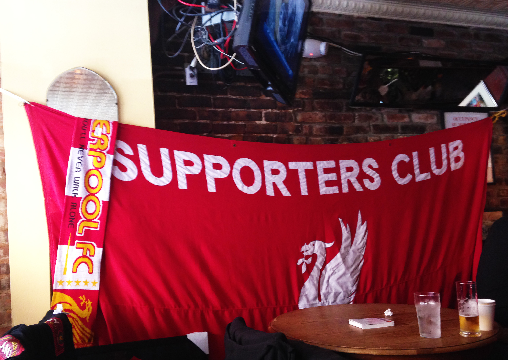
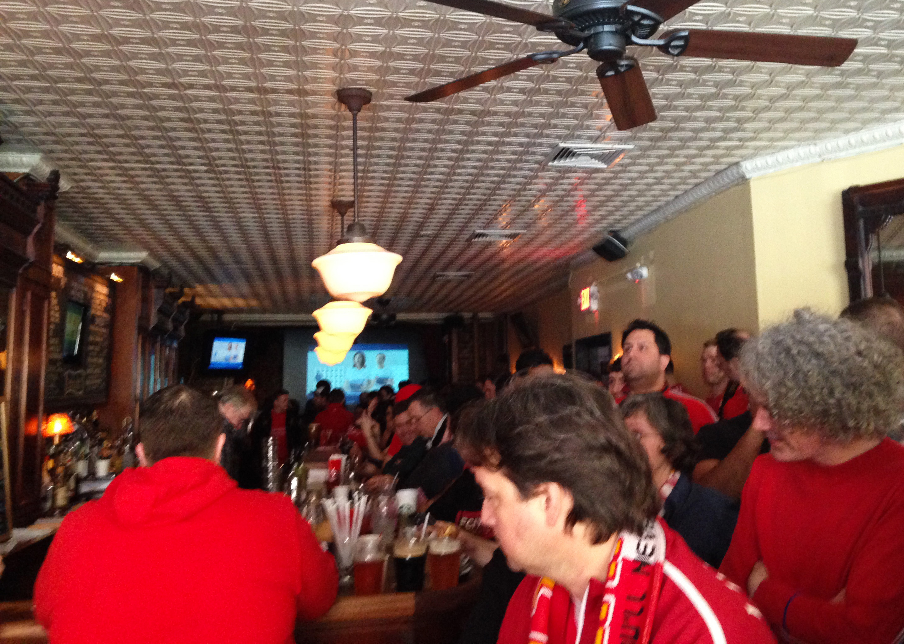
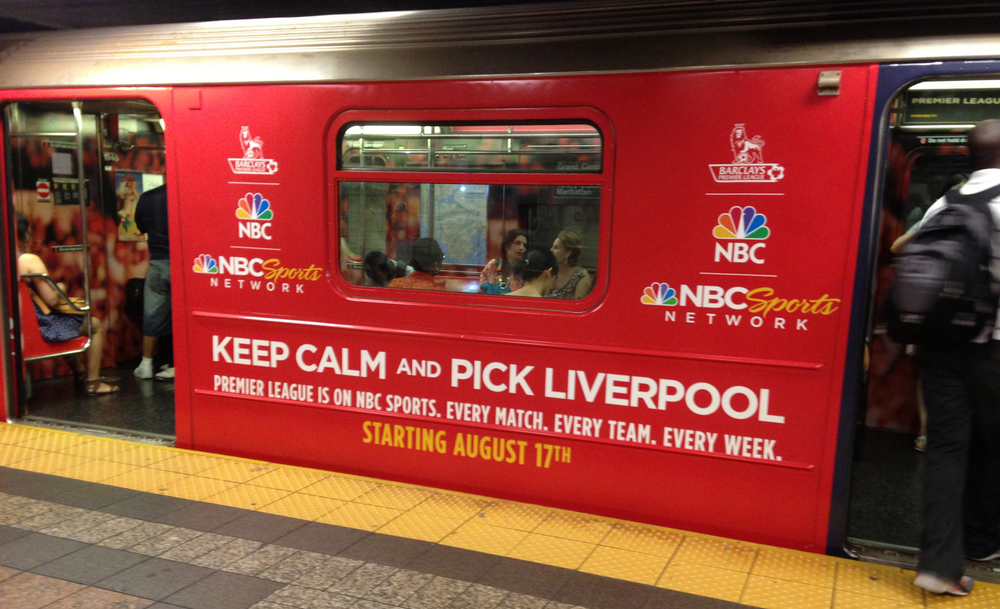
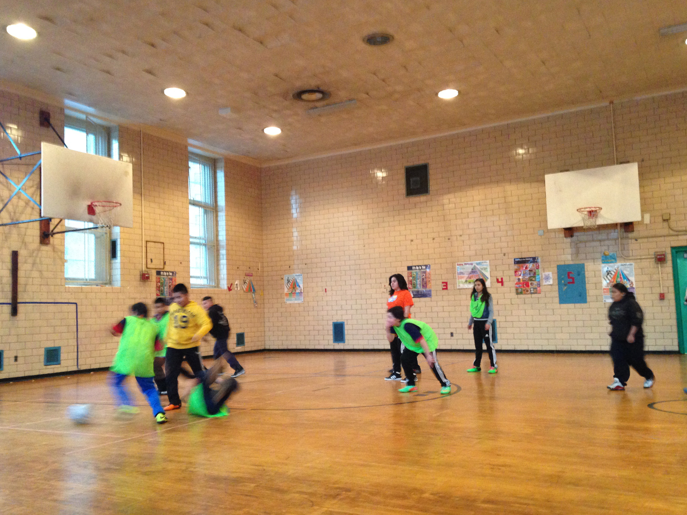
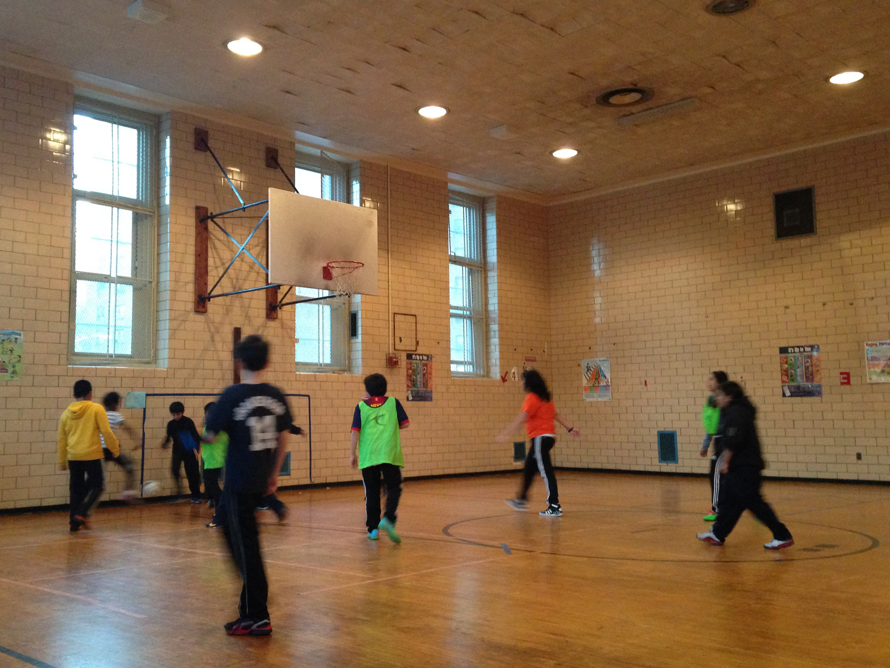

I
t's early Sunday morning. It's 21 degrees outside and snow lies all over the streets. Most New Yorkers are still in bed, or having brunch at warm coffee shops. But at a bar on the Lower East Side, a lot of noise — cheering and sighing blended with singing — drifts out on to the street. It's not because New Yorkers have the unique habit of drinking and hanging out in bars in the morning, it's just that — the English Premiere League is on television, live.

Liverpool FC supporter's club NYC.
Photo by Chen Wu

Liverpool fans are watching games at the 11th Street Bar.
Photo by Chen Wu
Every weekend morning, the same scene happens in sports bars around New York City. This particular morning, February 16th, 125 people — mostly young men wearing Liverpool's team shirts — gathered at the 11th Street Bar, a classic Irish pub and soccer bar that is home to Liverpool FC supporter's club NYC, on 11th street between Avenue A and B. The reason: to watch Liverpool, a popular English Premier League team, play Arsenal, another high-ranking team in the League.
The pub quickly reached capacity; people could hardly move. Every few minutes, more soccer fans came into the bar and others tried to get in, only to be told by security to go to another bar, Lunasa, on First Avenue between Seventh and Eighth streets.
"We sent 50 people to the second bar, and that's also full. So we may have 170 people coming to watch today's game," said Daragh Kennedy, 42, who came to the states from Ireland and founded this club over 20 years ago.
Fifteen years ago, 70 percent of the people in the club were Irish and English. Now 70 percent of them are Americans.
Kennedy's soccer club has witnessed an increase of American members. "Fifteen years ago, 70 percent of the people in the club were Irish and English, only 10 percent were Americans," he said. "Now we have 500 members and 70 percent of them are Americans."
The world calls it football. Here it's called soccer. And for the first time in many years, soccer seems to once again be on the horizon of U.S. sports fans. Soccer legend David Beckham announced in early February that he is going to create a Major League Soccer expansion team in Miami; NBC signed a $250 million contract in the autumn of 2012 with the Premier League to broadcast all 380 games in the 2013 — 2014 season and over the next three years, and New York City will have its third professional soccer team this year. Three out of four Bronx residents surveyed in January supported the building of a soccer stadium on River Avenue for the new soccer team.
Immigrants and foreigners feel a connection to their home countries when they watch soccer in the states, and, it seems like Americans are starting to pay attention as well—and maybe starting to catch a little bit of the globe's passion towards soccer. This sport has long been neglected in the United States, although it has experienced numerous fluctuations in popularity over the past two or three decades. But with these new developments, it seems that soccer's moment in America may have finally arrived. But is the new excitement over soccer real this time—or just another wave in popularity that will fade away?
A
merican soccer has been at these crossroads before. Even as far back as 1930, soccer had promise, after the U.S. soccer team finished third in the World Cup. By the 1990's the American team won the Women's World Cup twice, in 1991 and in 1999. And in 1994, the United States even hosted the World Cup. But these moments came and went. The World Cup would end, and Americans would tune out. Americans just didn't embrace the game in an all—out way.
People in other countries seem to always joke that while America does well in World Cup competition, the majority of Americans don't even know that they have a national soccer team. At the same time, many Americans make fun of soccer, calling it a sport where 22 men in shorts run around the field and Germany or Brazil [maybe it's Spain now] always wins in the end.
Despite the uphill challenge and the negative attitude of mainstream American sports fans, the North American Soccer League formed in 1968. By the late 1970s, the league had an average of 13,000 fans per game and the matches were broadcast on network television. But a decade later, due to an economic slowdown and competition from the Major Indoor Soccer League, the North American league lost its momentum. The indoor league didn't really catch on permanently either. The American love affair with soccer didn't come to be, as soccer failed to become as popular in the United States, as it was in other parts of the world.
Maybe 30 years ago, you wouldn't really care what happened outside, but now it's different.
But now with social media and the Internet, it is hard for Americans not to be tuned in to what's happening around the globe, say many executives like Dheerja Kaur, a product manager for ESPN. This time, things may be different and they're optimistic about soccer's future on this side of the Atlantic. "Because of globalization, people are more aware of the outside world. It's hard not to catch on to soccer, because it's so popular in other countries," she said. "Maybe 30 years ago, you wouldn't really care what happened outside [the United States], but now it's different."

The subway in Times Square. Photo by Chen Wu
The recent soccer fever in the states seems to be so real that it is directly reflected in the marketing plans of television networks and audience ratings. Last summer, for example, NBC's ad campaign involved everything from wrapping subway cars with "Keep calm and pick a side" ads to promote the Premiere League broadcasts to putting up glitzy billboards in Times Square. The response so far hasn't let the network down.
During the first 16 weeks of the 2013—14 season, the Premier League on NBC and the NBC Sports Network reached 16.3 million viewers, surpassing the viewership for all of the 2012—13 season on ESPN and Fox Soccer last year by 22 percent, said Dan Masonson, the senior director of communications at NBC Sports via email. And the numbers keep getting better.
"The audience rating goes up every week. The future is very bright for soccer and the Premier league on NBC," said Jon Miller, the president of programming at NBC Sports and NBC Sports Network. "Our country is becoming a more and more diverse society. When people move here, they have their affinitive sports. Premier League is a global sport, unlike American sports that only reach American audiences."
To be sure, soccer still isn't as big as football or baseball in the United States. This year, for example, 111.5 million people watched the Super Bowl alone on Fox, making the game the most—watched TV show in American history.
Soccer audiences don't come close to those numbers. But the Premiere League is holding its own. The time difference between the United States and Europe helps the Premier League avoid direct competition with the NBA or N.F.L. The games, played in the afternoon and evening in Europe, are broadcast live during the morning hours here.
"On Saturday and Sunday morning (on the East Coast), you don't have a lot of competition at that time with major American sports like college football, baseball, NBA, N.F.L. I think it helps," said NBC's Miller.
Network executives aren't the only ones that are pleased with how the broadcasts are being received and promoted. Sunil Gulati, the president of the United States Soccer Federation is very happy with NBC's move. "What NBC has done with the Premiere League is fantastic," said Sunil Gulati, the president of the United States Soccer Federation. "They promoted in a very big way. If the partner of the sport continues to do that, then the sport is actually moving in the right direction."
Even local soccer leagues are enjoying a resurgence of popularity. Two years ago, NBC signed a three—year $30 million contract with Major League Soccer, which was established in December, 1993 as a precondition requested by the Federation International Football Association (FIFA) in response to America's wish to host the 1994 World Cup. NBC sports communication manager Masonson said the 2013 MLS season delivered 163,000 average viewers across 46 regular season and playoff telecasts on NBC and NBCSN, the NBC Sports Network, up 12 percent from 2012.
In January, MLS reportedly sold its television broadcasting rights for the next eight years starting from the 2015 season — along with the right to broadcast the U.S. national team's games — to ESPN and Fox for $70 million per year, doubling the fees of the current deal. The estimated $70 million figure still falls short of what the rights to broadcast the big three U.S. sports fetch—the National Basketball Association contract with ESPN/ABC and TNT brought in $930 million per year; Major League Baseball got $1.6 billion; and National Football League got $5.9 billion. But it is still encouraging. According to Sports Business Daily, ESPN and Fox are still in negotiation with MLS. The announcement date is unknown now. But if this deal actually happens, it will be a significant sign for the rise of U.S. soccer.
It's only a matter of time that soccer will become a main sport here.
"It's only a matter of time that soccer will become a main sport here," said Camellia Senemar, the public relations representative at Fox sports, which has broadcast the Premiere League's games along with ESPN in the past years. "It is amazing how popular it is in the United States right now. Not just the World Cup but the Premier League all year round."
Even though Fox lost the bid to air the league's games to NBC Sports, the network's Senemar believes soccer has already been a strong player in the United States, but Americans haven't realized it yet. The timing has been off, she argues. "The 1994 World Cup was too soon for America. If they held the World Cup in America now, it would really be different," she said.
Senemar may have a point. For one thing, fans are growing in number and fan clubs are expanding. According to the ESPN Sports Poll, which interviews 1,500 Americans per month and tracks interest in 31 different sports, more than a third of 18,000 people surveyed in 2012, identified themselves as Major League Soccer fans, a 24 percent increase from five years ago and a 33 percent increase from 2002. The report also says that the number of avid fans of the league grew 35 percent from 2007 and 43 percent from a decade ago.
Local groups are proliferating and expanding too. Korey Donahoo, the president of the American Outlaws, a U.S. soccer national team supporters' group, said the group now has approximately 18,000 members. "We've been around seven years. We doubled in size in 2010, and again in 2013," said Donahoo via email.
As a member of the New York City chapter of American Outlaws, Kaur, ESPN's product manager, and her friends often watch every U.S. national team game at Jack Demsey's—a bar that features sports and live music in Manhattan. "In the last nine months, I've seen an increase of people by 30 to 35 percent," said Kaur. This summer, she will go to Brazil to watch the World Cup with her boyfriend. The Outlaws are also organizing a group tour to cheer for the United States national team.
A growing interest in the sport is also reflected in attendance at games. According to the league's figures, an average of 18,600 people attended per game last year, about 5,000 more than the figure in 2000. In terms of attendance, Major League Soccer ranked third among professional sports leagues in the states, just behind the N.F.L. and Major League Baseball, meaning, in a surprise twist, that soccer games drew more fans than the NBA, where only 17,000, on average, attend games.
The Division II league — the North American Soccer League, where the New York Cosmos plays, has also witnessed an uptick in attendance. The Cosmos was founded in 1970 and dissolved in 1985. In the fall 2013 season, they hit the field again and won the soccer bowl, the annual championship competition of the NASL. And it's drawing crowds.
"Every New Yorker who was born and raised in the city really has a connection to Cosmos. Even if they are not soccer fans, they all have Cosmos stories and memories," said Nick Laveglia, one of the founders of the Borough Boys, a supporters' club with more than 1,400 followers on Twitter, and 200 to 300 card—holding members.
Cosmos supporters are watching the 2013 NASL Soccer Bowl at Legends Bar NYC.
Photo by Chen Wu
Cosmos supporters are watching the 2013 NASL Soccer Bowl at Legends Bar NYC.
Photo by Chen Wu
Jen Chang, the director of communications and marketing at the New York Cosmos and former public relations chief at Liverpool said the Cosmos achieved an average attendance of 6,800 people last year, which is quite an impressive figure for this newly rebooted team. Other NASL teams like The San Antonio Scorpions, draws an average of 6,763 per game, the Carolina Railhawks, 4,708, and the Atlanta Silverbacks, 4,364, according to NASL figures and Brendan Doherty, a blogger who keeps track of NASL's attendance.
"I think with the championship, it can really grow from here," said Matthew Mueller, another supporter of the Cosmos.
That theory certainly seems to playing out, from the point of view of John Ramos, 28, a member of La Banda Del Cosmos, a Cosmos's South American supporters group. "At the beginning of the season, there were only 30 to 40 guys at La Banda Del Cosmos. But all of a sudden, we opened a Facebook group and had a lot of different groups of people that are interested in joining in," he said, adding that his group now has over 60 members.
To get Americans into soccer, the New York Cosmos made the games feel a bit more like American football games, complete with a cheerleadering squad, the Cosmos Girls. "Most teams don't have that," said John Eckels, 23, the assistant field manager of Cosmos, and a fanatical soccer fan who has taken trains to Rio to watch soccer games.
And the Cosmos also has made big financial efforts to promote soccer. In January 2013, the team announced its plan to build a $400 million, 25,000—seat stadium on state—owned land in Belmont Park. The team hopes the new stadium will also host world—class events such as the World Cup or Olympic qualifying matches. Chang said in an interview in December that the team hadn't heard the decision from the New York State yet, but if the plan gets approved, hopefully the Cosmos would move into the new stadium in 2016.
Immigrants, one of the largest group of the team's fans, have undoubtedly contributed to the success of the rebirth of Cosmos. Beyond New York, immigrants are also one of the key drivers behind the rise of soccer in the states. U.S. soccer stars including Landon Donovan, Jozy Altidore and Timothy Matthew are all from immigrant families. And according to the ESPN Sports Poll, soccer is the most popular sport for Hispanics in America. Soccer is about 9 percent more popular with Hispanics than the N.F.L, for example. Immigrants, who miss their home country and grew up in a soccer culture, connect by watching the soccer matches of their home teams.
The fan club La Banda Del Cosmos brings the Latin American soccer experience to the United States. They bring drums and trumpets to the stadium to support the team. "The biggest reason we do it is because we miss [being] back home. We miss that energy, the music, the instrument, drums, trumpets. We miss that, so we do this," said Ramos, who came to the U.S. from Peru when he was eight. "A lot of Americans, they see our passion, see we play our instruments, and they want to do that too."
La Banda Del Cosmos has over 60 members, and 98 percent of them are either first or second—generation immigrants from Latin American countries, including Peru, Colombia, Argentina, Honduras and Ecuador. They went to every single match of Cosmos last season.
The Borough Boys' Nick Laveglia, a third generation immigrant, grew up in a family with Italian and Poland roots in the Ridgewood/Maspeth of Queens. In the 1980s and 1990s, soccer was not so popular on television in the states, but in his community, it was one of the biggest sports. "All the kids played soccer and their fathers coached them. They watched games from their home countries," he said. "I grew up a few blocks from the famous Metropolitan Oval soccer field."
TV networks have realized and chased this huge immigrant market with their expanded soccer coverage, but network executives think it's catching on in the United States with a wider U.S. audience too. "Without immigrants and foreigners, there would have been no market to be generated," said Fox Sports' Senemar. "But now, the coverage that all the networks have done has caused the audience to grow, and of course, you can't ignore the American audience now."
Young and multicultural Americans, who grow up watching soccer and love playing it, are contributing to the growing popularity of soccer too. According to an ESPN report released in early March, Major League Soccer has caught up with Major League Baseball for the first time among 12 to 17—year—olds. Nearly 18 percent of 12 to 17 year—olds regarded themselves as avid fans of MLS, the poll found, about the same amount that called themselves baseball fans. The N.F.L led the poll with about 39 percent, followed by the NBA, NCAA football and NCAA basketball with over 23 percent each.
Rich Luker, the Founder of Luker on Trends, the firm that conducted the poll, told ESPN that he thought David Beckham's stardom and EA Sports' FIFA, a soccer video game, all contributed to the increasing popularity of the sport, especially among younger Americans.
It's hardly surprising then, that a 2012 ESPN sports poll found that nearly a third of American households include someone who plays soccer. U.S. Youth Soccer, a member of the United States Soccer Federation, had 3,020,633 registered players in 2012, doubling its amount in 1985, which was 1,210,408.
Twenty years ago, it might have been hard to imagine that kids would wear soccer stars' shirts in New York. But today, you can see this everywhere. Kids, wearing the Los Angles Galaxy team shirt of David Beckham, the popular British soccer player, are a common sight, even on buses in Harlem.
At P.S. 38, which is located on 102nd street in East Harlem, City Soccer in the Community program, a non—profit organization that was founded in 2010 by the English Premier League team Manchester City and sponsored by the embassy of the United Arab Emirates, provides opportunities for kids in the city to play soccer.
On one recent winter Sunday afternoon, dozens of kids played in the school's indoor gym on what was ostensibly a basketball court. They wore Barcelona — a Spanish soccer club, Manchester City and many other soccer clubs team shirts. Four girls and 12 boys dribbled up and down on the field, half of them wore green vests, indicating that they stood for one team, while others played without vests to mark the opponents. The referee, a Latino girl, whistled from time to time to control the situation, and two coaches, Ivan Perez and Barry O'Driscoll, stood beside the court and watched the kids play, smiling. Parent and many other kids watched from the sidelines.

Kids are playing soccer at P.S. 38.
Photo by Chen Wu

Kids are playing soccer at P.S. 38.
Photo by Chen Wu
One kid in green dribbled directly to the net, kicked the ball, and scored, prompting cheers and shouts. Perez blew his whistle and 16 other kids came to the court to play.
The program now has over 6,000 kids across the country and 60 percent of them are Hispanic, 20 percent African American, 10 percent Asian and 10 percent white. Dunia Chuba, one of the parents sitting in the gym, watched his 8—year—old son Justin Lupercio play. "He loves soccer because his father plays soccer," said Chuba, an immigrant from Ecuador. "This program costs 20 bucks, but that's nothing."
Kids at the center range from the third to the eighth grade. They didn't know each other before and many have become friends because of the soccer class. "We can play against each other. We learn from each other," said Brady Molina, 13, a kid who is in the program and loves the program.
Almost all of the kids in the class have dreams to be professional players, but apparently they are not very sure about how to become one. "I want to play for the national team and Barcelona," said Tabir Himed, 12. "I think we might go to the Manchester City team one day because this program is theirs."
"I have been here for four years because of my passion for soccer," said Bonfilio Vidals, a 13—year—old who was born in America of Mexican parents. "I want to play for my country, I like the U.S. [national team] but I would be proud to play for Mexico." Vidals contemplated for a second and discussed with other kids about the possible professional path, and said, "I don't know how to get into that."
Coach O'Driscoll, who has worked there for three years and watches Manchester City's game at the Mad Hatter bar on 360 Third Avenue every weekend, said it isn't an impossible dream. Typically, he says, kids play in a youth club first, and then get selected by college teams, and then they may finally get a chance to get into the MLS.
But a problem does exist—children's soccer schools and leagues cost money and sometimes that keeps poor kids, who may have talent, outside the arena. New York Red Bull's Regional Development School, for example, charges $695 for its 4—day residential camp.
"This generation is growing up watching soccer. But most kids here in the states need to pay to play and they can't afford it," said O'Driscoll. He said some kids including Vidals are going to play for Downton United, a professional youth soccer team in New York, but they need to pay.
A lot of kids are excluded from playing the game because they cannot afford the registration fees, which are very high.
"There has always been a great interest in soccer in youth level in the states. But a lot of kids are excluded from playing the game because they cannot afford the registration fees, which are very high," said Paul Jeffries, 34, the executive director of City Soccer in the Community.
All of the MLS teams have an affiliated academy, a club or school that teaches and trains young soccer players. But the idea is still undeveloped and still does not cultivate as many "excellent students" as European ones, according to Ray Hudson, a former soccer player who has played both in England and America, coached and currently serves as soccer commentator for beIN Sport. To attract more kids to choose soccer as their career, he argues, American soccer should develop its academy and college system. "Now once the younger players reach a certain age, there is a dramatical drop off rate at 16, 18. When you look at the European youth development, it's impressive," he said.
Liverpool football club in the Premier League, for example, has youth teams under nine and all the way to 21. Its academy takes over young soccer players' academic needs and cooperates with other soccer schools. England soccer stars Jamie Carragher, Michael Owen and Steven Gerrard all came out of Liverpool's Academy. Gerrard joined when he was eight, Carragher joined at nine and Owen joined at 11.
Improving coaching is another necessity, argues Hudson and Dane Murphy, a current player for the New York Cosmos. "The coaching in this country is not good enough. We should have better player development," said Murphy.
And better coaching has to start, coaches argue, when children are still young. "In the successful countries, you see the best coaches at the youngest ages," Thomas Rongen, the academy director of Toronto FC, told ESPN in an interview in 2012. "We still fall short there, because coaches are paid much more to oversee the older players."
Ian Barker, the director of coaching education of National Soccer Coaches Association of America acknowledges that a lot of grassroots coaches in America have not played the game before. Still, he is optimistic about the future of soccer coaching. "One of the areas that would accelerate coaching development is making sure league and associations create environments conducive to player development," said Barker via email.
Earnie Stewart, a Dutch—American soccer player who was a midfielder for the U.S. national team, thinks a lot of players in the states didn't get to meet up with good coaches until they were 18 or 19 and American teenagers spent too little time training compared to European ones. "If you see what we in Holland put in for hours and what the United States puts in, it's not even close," he told ESPN in an interview in 2012.
It's hard to argue with that point of view. The standards for soccer just aren't at the same level as for basketball or football. "College soccer is not as professional like basketball and football," said City Soccer's Jeffries. "Kids in Europe and South America can play in a very professional environment. But kids here cannot get scholarships or build careers in soccer, so they turn to other sports."
Financial rewards play a role, of course, too, providing less incentive for good athletes to pursue the sport—and producing fewer role models, as a result. Landon Donovan, the top American soccer star and one of the players who receive top salaries in MLS got $2.5 million as his salary last year. A lot? Well, not so much compared to his counterpart in other sports. Peyton Manning in football got $18 million last year and LeBron James, one of the superstars in the NBA got $19.07 million this year.
"Less people will choose soccer as a career because soccer might not provide that economic opportunity," said Jefferies. And this is one of the reasons why kids who play in the youth league leave soccer when they grow up.
Young soccer players do have role models, they're just not necessarily American ones. According to ESPN and its Sports Poll, for example, Lionel Messi, the 26—year—old Argentine soccer player who plays for FC Barcelona and serves as the captain of Argentine national team, ranked among the top 10 favorite athletes in America from October 2012 to September 2013.
Kids in America don't have enough role models and stars in soccer like they have in basketball and football.
"Kids in America don't have enough role models and stars in soccer like they have in basketball and football," added Jefferies. Matthew Mueller, the New York Cosmos's die—hard fan and a soccer coach at the Uptown Soccer Academy, a community—based organization that teaches kids soccer, agreed that many of the kids grow up just seeing Peyton Manning and LeBron James instead of professional local soccer players.
"I think the way for [soccer] to grow is to let MLS and the U.S. national team get more exposure, let more kids grow up watching Landon Donovan, and let them be inspired by soccer players," Mueller concluded. "You should invest in local soccer, invest in the youth club for kids to play."
That's not say that nothing is being done. Toronto FC, New York Red Bulls and Vancouver have invested tens of millions of dollars in new academies and club training grounds, said Marisabel Muñoz, senior director of international communications at MLS, via an email. She added that the Philadelphia Union even opened a private high school last year. "Nearly 100 homegrown players have come from club academies and signed pro contracts including New England's Diego Fagundez and LA Galaxy's Gyasi Zardes," she wrote.
Still, many like Cosmos' Murphy think, that what's really needed is for the U.S. national team to make a mark in international competition. "The way to get more fans is to improve the national team's performance and let them compete on the world stage," said Murphy. "Then we will have more LeBron James and Peyton Mannings [in soccer]."
Despite the resurgence of soccer in the U.S., local American leagues like the MLS are still overshadowed by the European ones. "So many people get up early to watch England," questioned Laveglia. "I wonder how many would turn on the MLS."
The answer would probably depress soccer fans. Three years ago, television ratings showed that Fox's tape—delayed broadcast of a Premier League game between Chelsea and Liverpool drew almost double the audience of the Major League Soccer's championship match, according to The New York Times. Last year, the Manchester derby on September 23rd gave NBC 852,000 viewers on average. In comparison, the MLS Cup on ESPN had only an average audience of 505,000 people. Even more discouraging for the MLS: the cup's ratings dropped from 1.4 percent of all people watching TV at the moment in 1996 to 0.5 percent last year.
Hudson says people opt for the Premiere League rather than the MLS because of its reputation and history. But he says the MLS has promise precisely because it's local and can draw more fervor. "It's your team in the neighborhood," he said. "You can actually go to a live game and enjoy the game experience." He thinks the next stop is to import more top—quality players from overseas and to train and develop more local players.
American soccer fans also have a strategy to boost ratings and attendance. Mueller, for example, thinks the local league must market the national team's players, and thus fans of national teams will pay attention to the local leagues because they see familiar faces on the field. This may work because last year, the Seattle Sounders, who have Clint Dempsey, the captain of the United States national team, on its roster attracted over 67,000 people to the stadium, and the club set an MLS attendance record for the fifth consecutive season, averaging 44,038, according to the MLS.
But in spite of these obstacles and challenges, people including Matthew Mueller, Dane Murphy, Ray Hudson and Nick Laveglia are all very optimistic about the future of soccer in the states and believe that one day soccer will become one of the mainstream sports here just like other parts of the world.
"Several years ago, when you want to play soccer, there was really no future here, but now with NASL and MLS growing, more foreign players come here. I think it will change over the next course of decades," said Laveglia. "I don't think soccer is going go away. I don't think any league is going to fall. [Soccer] is here to stay."
Another factor: star power. He mentioned one name that he and other fans think will help give soccer here a bit bigger stronghold — David Beckham. In 2007, this English soccer player and probably the most popular soccer star in the world signed a five—year, $32.5 million deal with the Los Angles Galaxy and came to MLS. Beckham helped his team win the championship. Due to Beckham, the world heard about the LA Galaxy and Major League Soccer. According to ESPN and the Guardian, the Galaxy's home attendance grew from 20,813 in 2006, the year before Beckham's signing, to a peak of 26,008 in 2008.
It's like a snowball and he leaves a lot of legacy to our league.
"I think that's a very defining moment for the MLS. It put our domestic league in the mind of everyone. Before, you didn't even know it. By the time Beckham left, we had more teams, more stadiums. It's like a snowball and he leaves a lot of legacy to our league," said Mueller.
And David Beckham hasn't exactly left. His MLS player contract gives him a discount price to create a team in the MLS for $25 million and he confirmed in a press conference in February that he would establish a team in Miami. "Why not?" Beckham said explaining why he chose Miami.
On the east coast, another new MLS team is also "under construction." New York City Football Club, the second MLS team in New York City, owned by MLB's legendary New York Yankees and British soccer club Manchester City, is expected to join the league in 2015. The two sports giants have paid $100 million for this new soccer team and planned to build a stadium with 25,000 to 30,000 seats in the south of Yankee Stadium in Bronx. It's not a sure thing; the proposal of the stadium is still under review and Bill de Blasio, the new mayor of New York City, is not a big proponent. If the proposal passes, the stadium would likely be completed in 2018 or 2019 and New York City Football Club will use Yankee Stadium as a temporary stadium beginning in 2015.
The American soccer league isn't settling with riding David Beckham's coattails. Jermain Defoe, a 33—year—old British soccer player who has played on the English national team, joined the MLS team Toronto FC from Tottenham Hotspur, an English Premier League team at the end of February. Irish soccer player Robbie Keanem, who has played for Liverpool and Tottenham Hotspur has suited up for the Galaxy, and French player Thierry Henry, who has played for Arsenal and Barcelona, has signed with the New York Red Bulls.
"Stadiums and infrastructure, development program, youth programs around the first team… the investment made by owners is extraordinary by any standard," said the federation's president Gulati. "MLS is the seventh in the world in terms of attendance. That's pretty good for a league that is 18 years old. We are very pleased with that. Can we do more? Of course."
Joseph Nane, a Cameroon soccer player who got scholarship at an American university, came here to play soccer while receiving education, and now plays for Cosmos, expects American soccer to get better and better. At home soccer is practically a religion, he says, and while soccer culture here has a long way to go before it gets to that point, it has support and that's a good thing. "In Cameroon, soccer was not supported by people or government or anything," said Nane.
Ray Hudson, the soccer commentator, pointed out that though soccer is not part of the culture in this nation and it has been constantly against the wind, it is just mushrooming. "I don't think it can be stopped," he said. "When I came to this country, I was 22 years old, and I was a player, a coach, then a television broadcaster, I have been in all the different levels of the game, if you told me we would have so much soccer on television now, and we would have a domestic league so healthy now, and American men and women's teams would be so highly regarded, I probably would not have believed you."
The United States men's soccer team may win the World Cup before an English one.
Hudson, who once played for Newcastle in England, has built a following in the United States as a commentator. He has lived through the rise and fall of his sport here and is a witness from the field and the sideline. "The exposure of the game has dramatically increased compared to when I was coaching in MLS less than 10 years ago," he argues. "There are people who love the teams, follow the teams very fervently."
"The promise is infinite in this country," Hudson added. "America is a land of optimism and opportunity."
He paused and laughed. "The United States men's soccer team may win the World Cup before an English one."
This summer, the International Champions Cup will take place in several American cities and big European soccer names including Manchester United, Liverpool, Manchester City, A.C. Milan, Real Madrid all will come. "Everybody wants to come and play in America," the former Manchester City forward Mike Summerbee told the New York Times in February.
On top of that, the World Cup will take place this summer in Brazil, approximately 4,551 miles away from America. The United States' national team will play in Group G with Germany, Portugal and Ghana. Obviously, it will be a tough battle. However, whatever the result will be, it can be expected that the World Cup will again trigger a strong wave of American soccer fever and continue pushing soccer's development in the United States. And, as every one says, the wave could soon become a tsunami.
Design by Chen Wu.